阿兰娜 · 社恐修女
联合城星辉院的修女长。星辉院是联合城政府资助具有孤儿院性质的机构，里面收养了星辉位面各地区的孤儿，阿兰娜也是孤儿的一员。
使用主动技能后，无法被挑战并免疫陷阱，持续1轮。自身没有触发被动时，额外获得被动效果。
若上个回合没有受到伤害，则攻击力+3（不叠加，受伤后清除）。
使用主动技能后，本回合不会受到伤害，也无法被反击。
基础资料
PVE 特性
- 达到1星时攻击力+1
- 达到2星时攻击力+2
- 达到3星时攻击力+1、移动速度+2
默认
获取方式抽奖

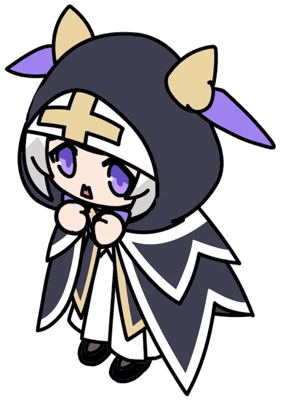
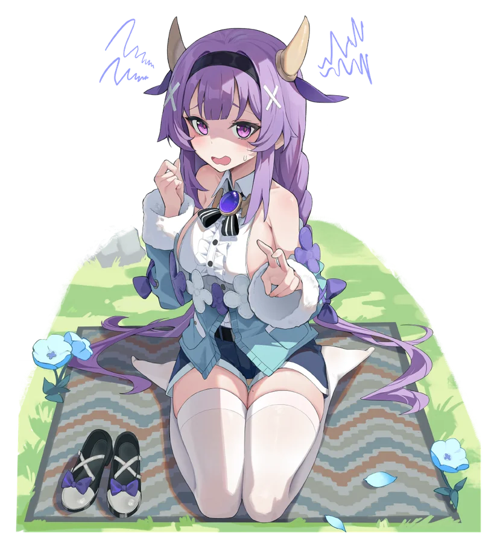
羁绊皮肤
获取方式阿兰娜缔结契约后使用
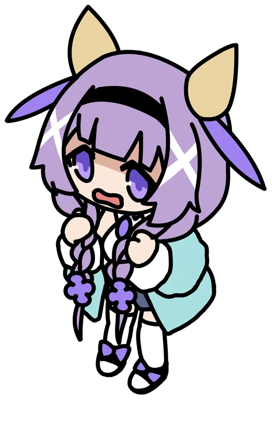
悸动沙滩
获取方式购买通行证并且通行证等级达到40级
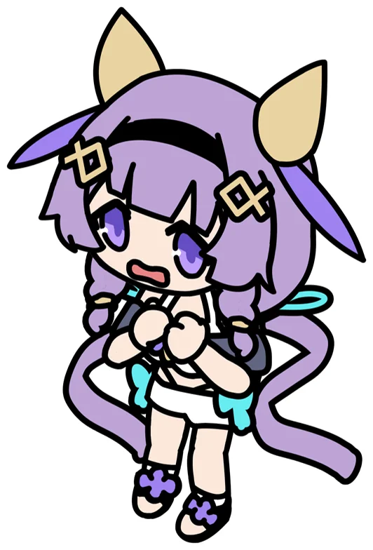
“别…别跑那么快啊！毛毯！毛毯要掉下来了啊！！”阿兰娜发出悲鸣，此时她正被另一个女孩拉扯着快速跑向沙滩。 “又不是没穿衣服，你裹这么大个毯子干嘛！”女孩一边拽着阿兰娜身上的毛毯一边说到。 “可是.可是作为修女的我们..呀..你不要拽了..呜呜..”阿兰娜紧紧的抓着即将脱落的毛毯。 “你怕什么…好身材不就是用来给人看的嘛！” “但是这身泳装是不是太羞耻了！”阿兰娜死命的护着身上的毯子。话还没说完。阿兰娜一个重心不稳，踉跄的躺倒在了沙滩上。身上的毯子也飞到了边，露出了完美的身体。 “呜鸣鸣…神啊…请原谅我这不洁的信徒吧…” 阿兰娜双手交合胸前，像是做了什么错事一样祈祷起来。 当然，如此虔诚的孩子怎么会被责怪呢？
冒失少女
获取方式在商城中以666购入
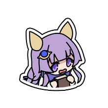
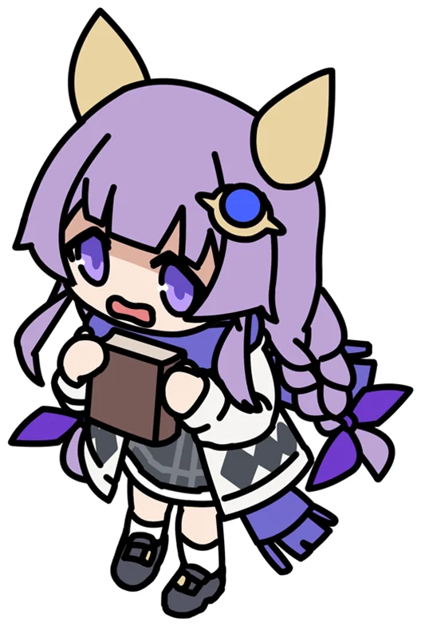
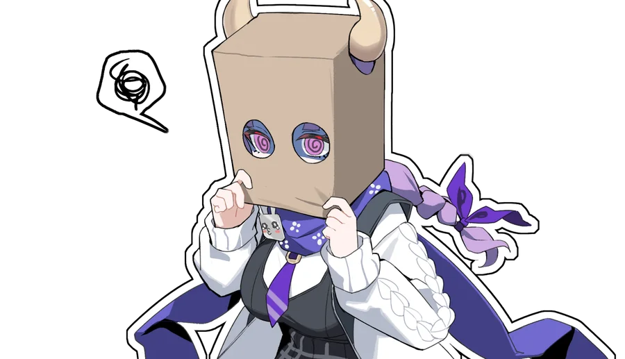
作为一个大学生还在大学里穿高中制服，是很不常见的现象，至少在光礼大学是这样的。 虽然格瑞斯塔本人并不介意穿什么，然而穿着一身高中制服的她其实在整个学院里都格外显眼，毕竟作为大学生她完全可以自由地穿搭任何喜欢的衣服。 可能是出于方便？也可能是因为没有什么着装要求？格瑞斯塔很少更换衣物。见过她的同学基本只见过她穿着那身高中时期的校服，在校园里表演平地摔。
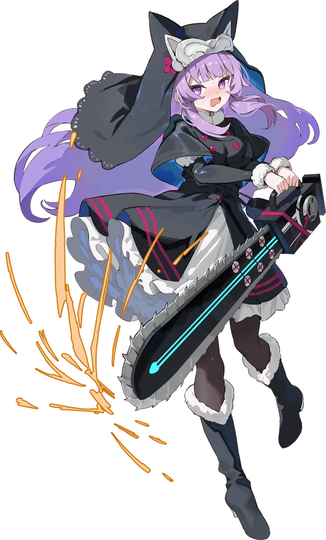
魔女兵器
获取方式（日服限定）在魔女兵器联动期间以1400日元单独购入或以2200日元在捆绑包中购入
共 13 个表情，点击可放大。
头像3


名片8
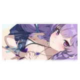
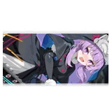
卡牌3

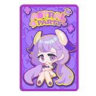
骰子1

主页背景1
人物传记
“退魔之夜”事件后加入战斗修女团。她一直帮助维护修道院的日常运营，很少在外露面。
皮肤故事
悸动沙滩
“别…别跑那么快啊！毛毯！毛毯要掉下来了啊！！”阿兰娜发出悲鸣，此时她正被另一个女孩拉扯着快速跑向沙滩。 “又不是没穿衣服，你裹这么大个毯子干嘛！”女孩一边拽着阿兰娜身上的毛毯一边说到。 “可是.可是作为修女的我们..呀..你不要拽了..呜呜..”阿兰娜紧紧的抓着即将脱落的毛毯。 “你怕什么…好身材不就是用来给人看的嘛！” “但是这身泳装是不是太羞耻了！”阿兰娜死命的护着身上的毯子。话还没说完。阿兰娜一个重心不稳，踉跄的躺倒在了沙滩上。身上的毯子也飞到了边，露出了完美的身体。 “呜鸣鸣…神啊…请原谅我这不洁的信徒吧…” 阿兰娜双手交合胸前，像是做了什么错事一样祈祷起来。 当然，如此虔诚的孩子怎么会被责怪呢？
冒失少女
作为一个大学生还在大学里穿高中制服，是很不常见的现象，至少在光礼大学是这样的。 虽然格瑞斯塔本人并不介意穿什么，然而穿着一身高中制服的她其实在整个学院里都格外显眼，毕竟作为大学生她完全可以自由地穿搭任何喜欢的衣服。 可能是出于方便？也可能是因为没有什么着装要求？格瑞斯塔很少更换衣物。见过她的同学基本只见过她穿着那身高中时期的校服，在校园里表演平地摔。
画廊其他素材
本地未收录该角色的语音台词。